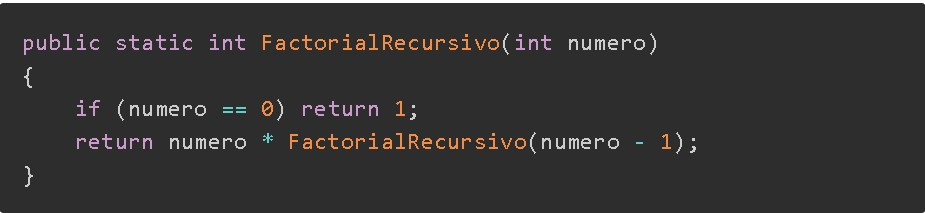

RECURSIVIDAD
La recursividad es un concepto que se indica cuando un método se llama a si mismo. Cuando creamos un método recursivo debemos tener en cuenta que este tiene que terminar por lo que dentro del método debemos asegurarnos de que no se está llamando a si mismo todo el rato, Lo que quiere decir que el ciclo es finito. que es recursividad Debemos tener mucho cuidado cuando realizamos llamadas recursivas ya que si la utilizamos sin control podríamos desbordar la memoria del ordenador, causando que el programa se rompa.
Podemos utilizar recursividad para reemplazar cualquier tipo de bucle. A pesar de ello en el mundo laboral no se utiliza demasiado, debido a que un error puede ser trágico en la memoria, así como tener una lista con millones de datos, puede hacer que utiliza mucha memoria. Aun así, la gran mayoría de las veces, utilizamos recursividad para algoritmos de búsqueda u ordenación. Se denomina caso base a la condición de terminación de la recursividad. Ejemplo 1 Ejemplo es calcular el factorial de un numero.*multiplicar todos los números entre dos enteros. En matemáticas se expresa con n! donde n es el último número a comprobar. Debemos empezar desde el 1.
